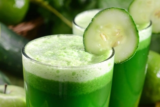
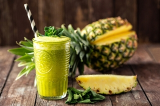
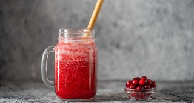

1. SUCO DE COUVE, PEPINO E MAÇÃ
O pepino possui propriedades diuréticas, ajudando a diminuir o excesso de líquido corporal e ajudando a emagrecer e secar a barriga. Já a couve e a maçã são boas fontes de fibras que ajudam a controlar o apetite.
INGREDIENTES:
- 1 folha de couve
- suco de ½ limão
- 1/3 de pepino com casca
- 1 maçã pequena com casca
- 150 ml de água de coco
MODO DE PREPARO:
Lavar bem a couve, o pepino e a maçã. Cortar a maçã e o pepino em cubos, rasgar a folha da couve e colocar no liquidificador. Adicionar os demais ingredientes ao liquidificador e bater por 2 minutos.
Coar e beber a seguir, de preferência sem açúcar. Este suco pode ser armazenado em garrafa ou outro pote bem vedado e mantido na geladeira. Esse suco detox tem aproximadamente 125 calorias.
2. SUCO DE LIMÃO, LARANJA E ALFACE

Este suco detox de limão, laranja e alface é rico em água e fibras, que favorecem a eliminação do excesso do líquido corporal e o controle da fome, evitando a ingestão excessiva de alimentos e ajudando a emagrecer e secar a barriga.
INGREDIENTES:
- Suco de 1 limão
- 1 laranja descascada e picada
- 6 folhas de alface
- ½ copo de água filtrada ou fervida
MODO DE PREPARO:
Bater no liquidificador todos os ingredientes e beber a seguir, de preferência sem coar ou adicionar açúcar ou adoçantes. Esse suco pode ser armazenado em geladeira. Esse suco detox contém aproximadamente 110 calorias.
3. SUCO DE ABACAXI E COUVE
Por conter alimentos ricos em água e fibras, que melhoram o funcionamento do intestino, além te ter propriedades diuréticas, este suco detox é uma ótima opção para emagrecer e secar a barriga. Uma porção desse suco de abacaxi e couve contém aproximadamente 156 calorias.
INGREDIENTES:
- 100 ml de água gelada
- 1 rodela de pepino
- 1 maçã verde pequena com casca
- 1 fatia de abacaxi
- 1 colher (de chá) de gengibre ralado
- 1 colher (de sobremesa) de sementes de chia
- 1 folha de couve
MODO DE PREPARO:
Bater no liquidificador todos os ingredientes, coar e beber em seguida, de preferência sem adoçar. Este suco pode ser guardado em uma geladeira por até 6 horas.
4. SUCO DE ACEROLA E CAMOMILA
O suco detox de acerola com camomila tem ação calmante, ajudando a controlar a compulsão alimentar em casos de ansiedade. Além disso, esse suco também tem poucas calorias, podendo ser consumido em uma dieta para emagrecer e perder barriga. Conheça outros benefícios do suco de acerola.
INGREDIENTES:
- 1 Xícara (de chá) de camomila frio
- 6 unidades de acerola fresca
MODO DE PREPARO:
Lavar bem as acerolas. Colocar todos os ingredientes num liquidificador e bater por 2 minutos. Coar, transferir para um copo e beber o suco em seguida. Esse suco detox tem aproximadamente 30 calorias.